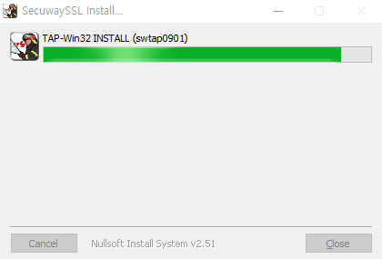

다운로드 버튼을 클릭하시면 설치파일을 다운로드 할 수 있습니다.
※ 지원가능 운영체제 : Windows vista, Windows7, Windows10
다운받은 VPN 클라이언트 설치파일 압축 해제 후 설치 진행
※ 지원가능 운영체제 : Windows vista, Windows7, Windows10, Mobile
설치파일을 더블 클릭하면 설치 시작
Windows 보안 확인 창이 표시되면 설치 버튼 클릭
설치 완료 후 현장지휘통제시스템 VPN 클라이언트 자동 실행
현장지휘통제시스템 VPN 클라이언트 실행화면에서 미리 부여받은 아이디와 비밀번호 입력 후 확인 버튼 클릭
정상적으로 VPN 로그인 완료 시 트레이 아이콘에 사용자 정보 표시
VPN 클라이언트 사용 후 접속 해제를 위해 트레이 아이콘에서 마우스 오른쪽 버튼 클릭하여 Exit 매뉴 선택
접속 해제가 정상 완료되면 트레이 아이콘이 사라짐